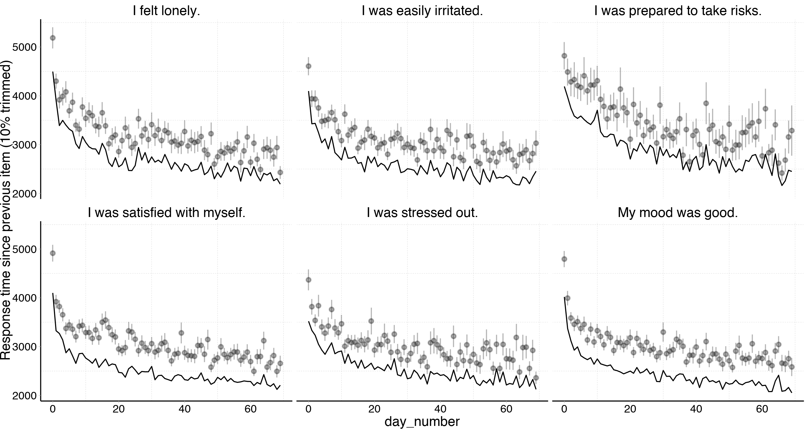
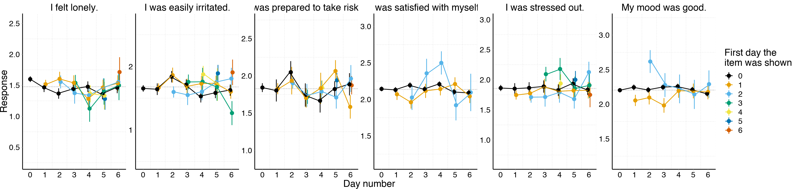
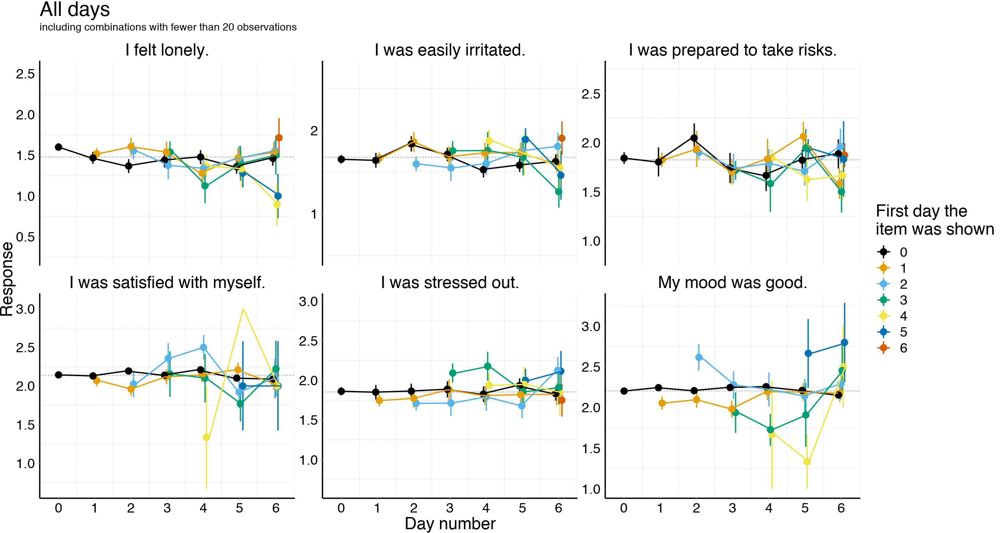
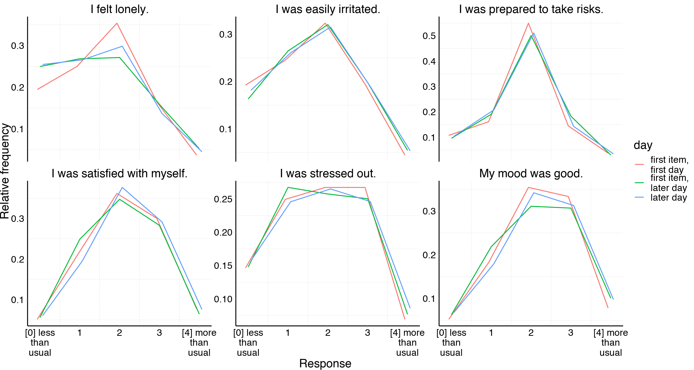
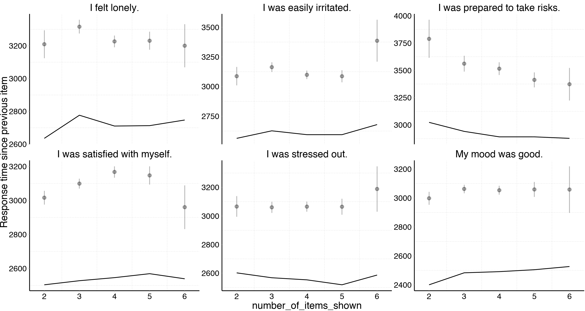
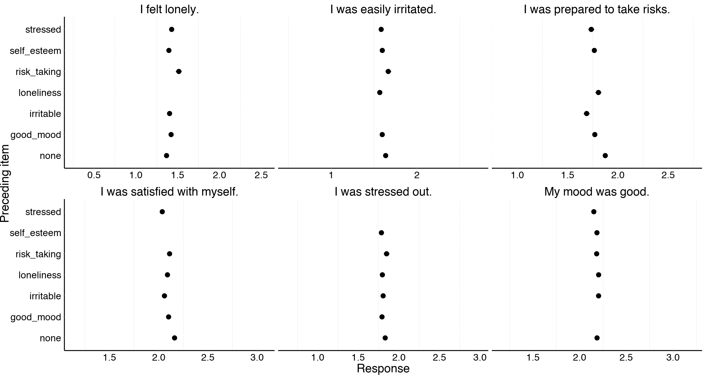
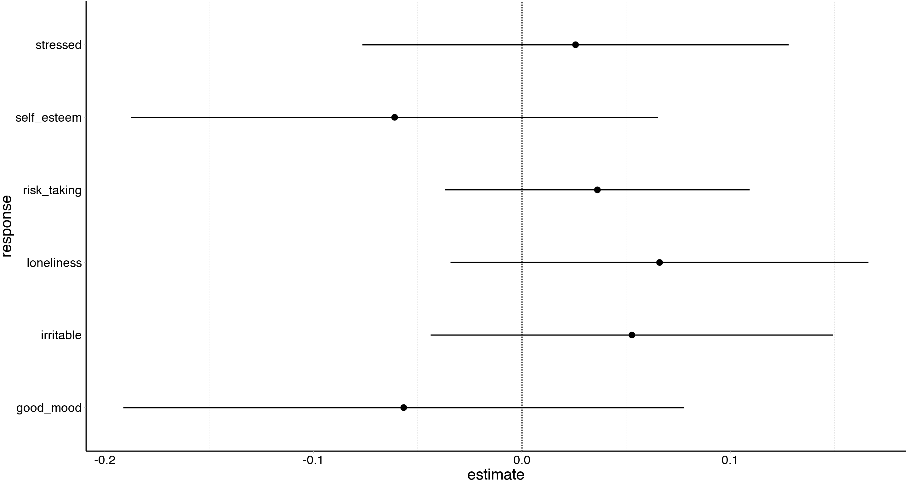
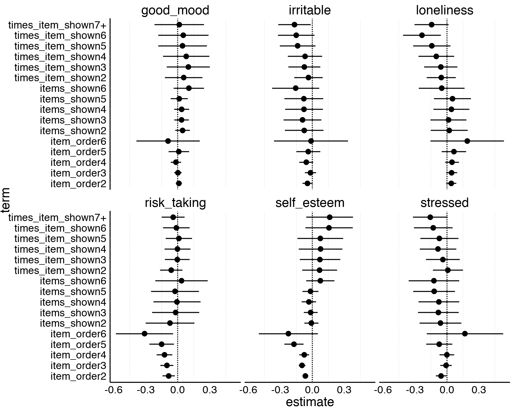
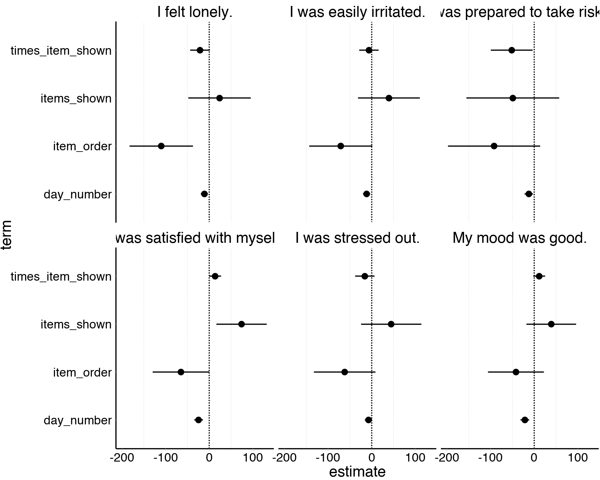
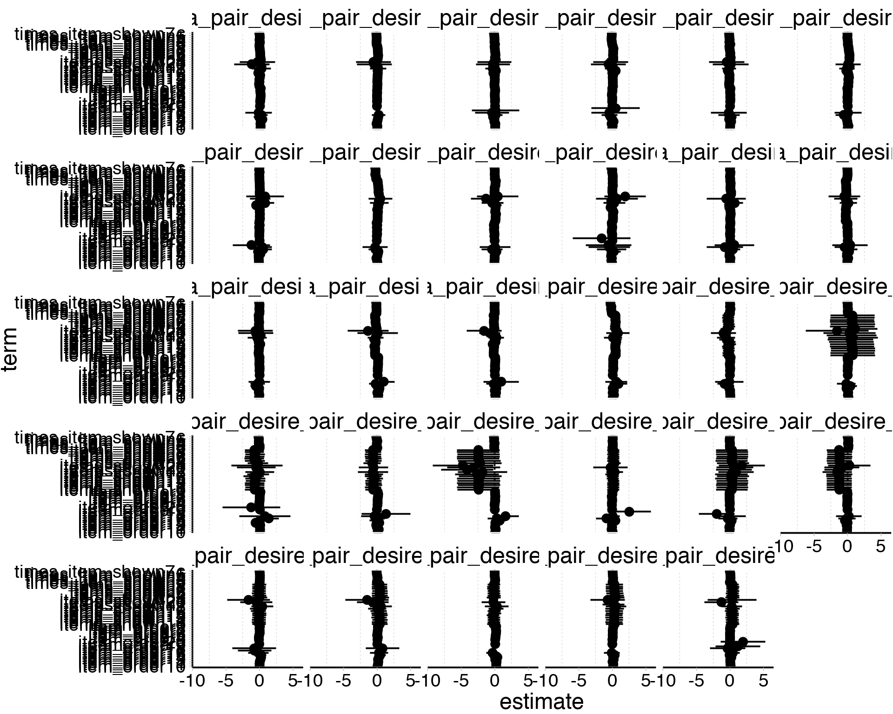

Table of Contents
Replicating and extending Shrout et al. (2017), amending their recommendations.
Authors: Ruben C. Arslan, Anne C. Reitz, Julie Driebe, Tanja Gerlach, & Lars Penke.
Description
Demographics
# A tibble: 1 x 13
type variable missing complete n mean sd p0 p25 p50
<chr> <chr> <chr> <chr> <chr> <chr> <chr> <chr> <chr> <chr>
1 inte… days 0 1259 1259 44.94 22.45 1 26 53
# … with 3 more variables: p75 <chr>, p100 <chr>, hist <chr>| type | variable | missing | complete | n | mean | sd | p0 | p25 | p50 | p75 | p100 | hist |
|---|---|---|---|---|---|---|---|---|---|---|---|---|
| numeric | age | 0 | 1259 | 1259 | 26.68 | 7.33 | 18 | 22 | 25 | 29 | 61 | ▇▇▃▁▁▁▁▁ |
| numeric | education_years | 0 | 1259 | 1259 | 15.2 | 4.79 | 0 | 13 | 16 | 18 | 26 | ▁▁▁▅▇▇▂▁ |
| numeric | has_children | 0 | 1259 | 1259 | 0.12 | 0.33 | 0 | 0 | 0 | 0 | 1 | ▇▁▁▁▁▁▁▁ |
| numeric | hetero_relationship | 0 | 1259 | 1259 | 0.68 | 0.47 | 0 | 0 | 1 | 1 | 1 | ▃▁▁▁▁▁▁▇ |
| numeric | nr_children | 1108 | 151 | 1259 | 1.7 | 0.77 | 1 | 1 | 2 | 2 | 5 | ▇▇▁▂▁▁▁▁ |
all_surveys$occupational_status
employed, intern homemaker, employed
0.00 0.00
intern not_working, employed
0.00 0.00
not_working, homemaker not_working, intern
0.00 0.00
not_working, student pupil, student
0.00 0.00
student, employed, intern student, homemaker
0.00 0.00
student, homemaker, employed trainee, employed
0.00 0.00
trainee, homemaker, employed trainee, student
0.00 0.00
homemaker pupil
0.01 0.01
student, intern not_working
0.01 0.02
trainee student, employed
0.02 0.03
employed student
0.27 0.60
all_surveys$occupational_status %contains% "student"
FALSE TRUE
0.34 0.66
all_surveys$occupational_status %contains% "employed"
TRUE FALSE
0.31 0.69 
haven::as_factor(all_surveys$relationship_status)
Item was never rendered for this user.
0.00
andere
0.01
verlobt
0.02
lose Beziehung
0.06
verheiratet
0.10
Single
0.31
feste Partnerschaft
0.50 Diary
The following items were shown in random order on the first page of our diary.
- I was stressed. (40% probability of being shown)
- I was lonely. (40%)
- My mood was good. (80%)
- I was prepared to take risks. (20%)
- I was satisfied with myself. (80%)
- I was irritable. (40%)
Participants (n=1259 women) could answer on a 5 point likert scale from “less than usual” to “more than usual”. Pole labels were placed left and right of blank, equally sized buttons. Because of our planned missing design with randomised display and order, participants saw only a subset of these items each day. Therefore, the following were randomised variables - the day an item was first shown (conditional on adjusting for day number), - the number of times an item was seen previously (conditional as above). - the number of items on that day. - the display order.
We did not randomise the start date of the entire diary. So, the key difference to Shrout et al. is that we cannot tell apart causal effects of the first day of the diary from e.g. selection effects, but we can disentangle the day people first respond to the diary from the day people first respond to the item, which Shrout et al. could not. We can estimate the difference between the first diary day and later days, but this difference might be exacerbated or reduced via selection effects.
We estimate smaller first day of item effects than Shrout et al. report. This may be
- because the initial elevation bias is concentrated on the diary level (as may be speculated based on our correlative results for loneliness) or
- because the bias is smaller for our items, sample, and assessment procedure, or
- because in a slightly ironic turn of events Shrout et al.’s results are suspected to the science version of initial elevation bias, i.e. winner’s curse, where the significance filter by publication results in inital overestimates of scientific effects.
Because of the randomisation, selection should play no role. However, in longitudinal studies and indeed in Shrout et al.’s study and our own, incomplete data is common. If dissatisfied individuals are more likely to discontinue the study, we might also see an initial elevation in dissatisfaction. Therefore, we test all effects both only on people who did not miss a day during the first week and including people who missed days.
Cohen’s d estimates were obtained by calculating the mean within-subject change and dividing it by the pooled between-subject SD.
Since our between-subject SDs are all around 1 and these biases are likely to be relative to the Likert scale used, we don’t do this.
# A tibble: 6 x 5
label_english mean sd n pct_shown
<chr> <dbl> <dbl> <int> <dbl>
1 I felt lonely. 1.40 1.14 22737 0.4
2 I was easily irritated. 1.61 1.12 22800 0.4
3 I was prepared to take risks. 1.79 0.951 11377 0.2
4 I was satisfied with myself. 2.11 0.970 45627 0.8
5 I was stressed out. 1.81 1.18 22776 0.4
6 My mood was good. 2.19 1.02 45612 0.8
Simple time series
Just a quick check that fluctuation in whether a question is asked is as random as intended over time. The Y axes include the global mean ± 1 global standard deviation for each item.

We showed above that responses do not drift much over time in the diary. But do participants learn to respond more quickly?

Time series by first day item shown
In this graph, we show mean response to the item, depending on which day of the diary we first asked it. Different-coloured lines reflect different starting days. We only show lines based on at least twenty participants to reduce noise. Therefore, fewer lines are shown for items with a higher probability of being shown. Wherever the initial point of each line exceeds the mean of the other lines on the day, this would be evidence for initial elevation bias.
In this graph, we show the first week. The Y axes include the global mean ± 1 global standard deviation for each item.

Here, we also show combinations with fewer than 20 participants.

Here, we move away from the time series display to more clearly aggregate the evidence across starting days. An initial elevation bias would show, when both items show for the first time on later days and items shown for the first time on the first day of the diary get elevated responses compared to later days. It is additionally possible that first days of the diary show additional elevation owing to selection biases (e.g., participants being more likely to enrol when lonely).

A response bias to a Likert scale may not only affect the mean response, but also the dispersion or the propensity to choose the middle or extreme categories. Such biases would balance out and not show up in the mean response. We therefore compute the relative frequency of certain responses for first days and later days.
Days on which the item is first shown have very similar frequencies as later days.

We can additionally examine whether responses slow down when items are first shown. We only examine the response time relative to the answer to the previous item here. This means the first item is excluded from consideration. We do this, because responses relative to the time the page loaded are strongly biased upwards through participants who clicked the link and did something else until the page loaded, or participants who first familiarise themselves with all items. Responses to the first item take almost 8000ms, much longer than responses to later items. The line shows the 10% trimmed means, the points show means plus standard errors. We excluded responses that were made out of order (negative response times relative to the previous item), and responses that took longer than 30 seconds.
Switching to the time series view somewhat clutters the display.

Time series by first day item shown (complete 1st week)
Here, only with those who didn’t miss a day in the first week (ruling out selective dropout as an explanation). Patterns seem unchanged.

Item order
The item order on each page was randomised too. If the mechanism for initial elevation bias involves familiarity with the response scale, we might expect to find that the first item on the first page on the first day is answered differently than later responses. Different mechanisms of response bias (e.g., amount of mouse movement required to reply is equal for all responses for the first item, but reduced for unchanged responses to lower down items) could lead to different response biases according to item order.
Item order is confounded with another randomised variable, namely the number of items shown on each page. For example, an item order of six only occurs when all six items were shown.
As above, we can not only examine the mean but also the relative frequencies of each response.

Again, we can also examine the response time to each item according to item order.
Number of items shown
As mentioned above, the number of items shown is also a randomised variable. It is in turn confounded with item order, because items shown on a page with more items are likely to have a later item order. Most importantly, when only one item is shown, item order is also one.

As above, we can not only examine the mean but also the relative frequencies of each response.

Again, we can also examine the response time to each item according to item order.

Last item
Given that item order is randomised, it seems fruitful to examine whether the previous question biases the next. This would be a potential mechanism for item order effects. Some differences are apparent, though minute,

It is not possible to infer whether the item content would bias the next response (i.e., a reminder of stress truly lowers mood) or whether these are the function of participants minimising “mousework” (i.e., after responding 4 to one item, it is slightly less effort to answer 4 for the next item too than to choose a different response, and certain items elicit higher mean responses).
We can exclude people who gave the same response to items as a robustness check. Of course, giving the same response to all items is not that unlikely when only two items were asked, and it is entirely possible for straightline response to be legitimate (even if they exceed the nominal probability expected if responses were independent, they may be more frequent on very quotidian days in a way that is difficult to model). Still, as a robustness check it will do.
# A tibble: 6 x 3
number_of_items_shown mean expected_if_independent
<int> <dbl> <dbl>
1 1 NaN 0.99
2 2 0.405 0.246
3 3 0.133 0.0702
4 4 0.0665 0.0218
5 5 0.0503 0.00713
6 6 0.0306 0.00241
As above, we can not only examine the mean but also the relative frequencies of each response.

Multilevel analysis
We have investigated each randomised variable in turn, but we also noted that item order and number of items shown are confounded with one another. In addition, the first day an item is shown is likely to be an earlier day of the diary, where we might expect to see selection bias. Further, we varied the instructions in the diary depending on how long ago the last diary was answered. We instructed participants to refer to the time period since their last diary entry, if that had happened within the last 24 hours, or to the last 24 hours, if the last diary entry was longer ago (and if it was their first diary entry).
In addition, a more generalised understanding of the initial elevation bias might lead us to believe that responses are continuously elevated more, the fewer times an item has been shown.
A natural way to disentangle these confounds is to simultaneously enter them into a regression. We fit multilevel regression per item in lme4.
Basic model
Here, we are adjusting for day number (0 to 7+, larger numbers are binned because covariates can no longer be isolated) and the time period referred to. We also enter a random effect for which day the item was first shown, and the participant.

All randomised exposures
We have three randomised variables:
- display order
- number of items shown
- the times the item was seen already (reference category: first day)
- last item
We adjust for day number (0 to 7+), the time period referred to (confounded with how often people have responded so far), random effects for the participant

Is there evidence for an additional bias of the last item identity? We test this separately because item order 1 and last item “none” are identical, and estimates become less precise because of similar, less severe multicollinearity.
response Df AIC BIC logLik deviance Chisq Chi Df
1 good_mood 27 128052 128287 -63999 127998 NA NA
2 good_mood 31 128053 128324 -63996 127991 6.405 4
3 irritable 27 67943 68160 -33945 67889 NA NA
4 irritable 31 67941 68190 -33940 67879 10.256 4
5 loneliness 27 68040 68257 -33993 67986 NA NA
6 loneliness 32 68037 68294 -33987 67973 12.466 5
7 risk_taking 27 29930 30129 -14938 29876 NA NA
8 risk_taking 31 29928 30156 -14933 29866 10.057 4
9 self_esteem 27 121015 121250 -60480 120961 NA NA
10 self_esteem 32 121007 121286 -60472 120943 17.647 5
11 stressed 27 70490 70707 -35218 70436 NA NA
12 stressed 32 70493 70750 -35215 70429 6.292 5
Pr(>Chisq)
1 NA
2 0.170864
3 NA
4 0.036337
5 NA
6 0.028935
7 NA
8 0.039474
9 NA
10 0.003423
11 NA
12 0.278802How much do our variables change when we residualise for all of these biases?
# A tibble: 1 x 6
good_mood irritable loneliness risk_taking self_esteem stressed
<dbl> <dbl> <dbl> <dbl> <dbl> <dbl>
1 0.999 0.999 0.997 0.996 0.999 0.999Not much at all.
Regression table
Continuous predictors

How much do our variables change when we residualise for all of these biases?
# A tibble: 1 x 6
good_mood irritable loneliness risk_taking self_esteem stressed
<dbl> <dbl> <dbl> <dbl> <dbl> <dbl>
1 0.999 0.999 0.999 0.997 0.999 0.999Regression table
Response time: Multilevel models
Continuous items shown model
Testing the times the item was seen already (reference category: first day) as a factor variable, rather than yes/no.
adjusting for day number (0 to 7+), the time period referred to (affected by how often people have responded so far), random effects for which day the item was first shown, the day number, the user.

Regression table
Other items
We focused on the most general items on the first page of our study. However, the diary also contained randomised (in order and odds of appearing) items about sexual desire, time use, and partner jealousy, among others. We show that the overall results (that residualising for estimated biases has negligible effects) holds here too, even though the partner jealousy items were asked on a response scale from “not at all” to “very much”, the desire items on a scale of “very inaccurate” to “very accurate”, and the time use items on the same “less than usual” to “more than usual” scale as the items on the first page.
Time items
On a “less than usual” to “more than usual” response scale.
How much do our variables change when we residualise for all of these biases?
# A tibble: 1 x 5
time_family time_friends time_people time_sports time_work_uni
<dbl> <dbl> <dbl> <dbl> <dbl>
1 0.999 0.997 0.996 0.999 0.998Desire items
On a “very inaccurate” to “very accurate” response scale.


Is there evidence for an additional bias of the last item identity? We test this separately because item order 1 and last item “none” are identical, and estimates become less precise because of similar, less severe multicollinearity.
response Df AIC BIC logLik deviance Chisq Chi Df
1 extra_pair_desire_1 64 51038 51534 -25455 50910 NA NA
2 extra_pair_desire_1 79 51044 51656 -25443 50886 23.624 15
3 extra_pair_desire_10 64 49500 49995 -24686 49372 NA NA
4 extra_pair_desire_10 78 49523 50126 -24683 49367 5.122 14
5 extra_pair_desire_11 64 48790 49285 -24331 48662 NA NA
6 extra_pair_desire_11 80 48815 49434 -24328 48655 6.734 16
7 extra_pair_desire_12 64 49465 49960 -24668 49337 NA NA
8 extra_pair_desire_12 80 49480 50099 -24660 49320 16.929 16
9 extra_pair_desire_13 64 50342 50837 -25107 50214 NA NA
10 extra_pair_desire_13 79 50364 50975 -25103 50206 8.414 15
11 extra_pair_desire_14 63 50450 50939 -25162 50324 NA NA
12 extra_pair_desire_14 78 50466 51071 -25155 50310 13.898 15
13 extra_pair_desire_15 64 49055 49551 -24463 48927 NA NA
14 extra_pair_desire_15 80 49068 49688 -24454 48908 18.793 16
15 extra_pair_desire_16 63 49782 50271 -24828 49656 NA NA
16 extra_pair_desire_16 78 49794 50399 -24819 49638 18.039 15
17 extra_pair_desire_2R 64 57089 57586 -28481 56961 NA NA
18 extra_pair_desire_2R 79 57103 57716 -28473 56945 16.188 15
19 extra_pair_desire_3R 64 55851 56347 -27861 55723 NA NA
20 extra_pair_desire_3R 81 55867 56495 -27853 55705 17.181 17
21 extra_pair_desire_4 63 50639 51127 -25257 50513 NA NA
22 extra_pair_desire_4 79 50661 51272 -25251 50503 10.322 16
23 extra_pair_desire_6 64 46349 46844 -23110 46221 NA NA
24 extra_pair_desire_6 80 46368 46987 -23104 46208 13.017 16
25 extra_pair_desire_7 64 50015 50512 -24944 49887 NA NA
26 extra_pair_desire_7 79 50035 50648 -24939 49877 10.111 15
27 extra_pair_desire_8 64 54562 55058 -27217 54434 NA NA
28 extra_pair_desire_8 79 54577 55188 -27209 54419 15.665 15
29 extra_pair_desire_9 64 50036 50531 -24954 49908 NA NA
30 extra_pair_desire_9 79 50050 50662 -24946 49892 15.563 15
31 in_pair_desire_1 62 30221 30677 -15048 30097 NA NA
32 in_pair_desire_1 77 30226 30792 -15036 30072 25.208 15
33 in_pair_desire_10 62 36660 37116 -18268 36536 NA NA
34 in_pair_desire_10 77 36676 37243 -18261 36522 14.160 15
35 in_pair_desire_11 64 39342 39813 -19607 39214 NA NA
36 in_pair_desire_11 78 39361 39935 -19603 39205 9.149 14
37 in_pair_desire_12 63 40386 40849 -20130 40260 NA NA
38 in_pair_desire_12 79 40389 40970 -20116 40231 28.619 16
39 in_pair_desire_13 62 38221 38677 -19048 38097 NA NA
40 in_pair_desire_13 78 38223 38796 -19033 38067 30.380 16
41 in_pair_desire_14 64 38389 38860 -19131 38261 NA NA
42 in_pair_desire_14 79 38402 38983 -19122 38244 17.032 15
43 in_pair_desire_15 62 29904 30360 -14890 29780 NA NA
44 in_pair_desire_15 78 29906 30481 -14875 29750 29.629 16
45 in_pair_desire_2R 64 31875 32346 -15874 31747 NA NA
46 in_pair_desire_2R 80 31896 32484 -15868 31736 11.571 16
47 in_pair_desire_3R 64 33336 33806 -16604 33208 NA NA
48 in_pair_desire_3R 79 33357 33938 -16600 33199 8.579 15
49 in_pair_desire_4 63 37882 38346 -18878 37756 NA NA
50 in_pair_desire_4 79 37892 38473 -18867 37734 22.808 16
51 in_pair_desire_6 63 37734 38197 -18804 37608 NA NA
52 in_pair_desire_6 78 37748 38322 -18796 37592 15.664 15
53 in_pair_desire_7 62 34182 34638 -17029 34058 NA NA
54 in_pair_desire_7 77 34174 34741 -17010 34020 37.291 15
55 in_pair_desire_8 63 30966 31430 -15420 30840 NA NA
56 in_pair_desire_8 77 30968 31536 -15407 30814 25.602 14
57 in_pair_desire_9 63 31765 32228 -15819 31639 NA NA
58 in_pair_desire_9 80 31784 32372 -15812 31624 14.568 17
Pr(>Chisq)
1 NA
2 0.071766
3 NA
4 0.984037
5 NA
6 0.978053
7 NA
8 0.390192
9 NA
10 0.906105
11 NA
12 0.533278
13 NA
14 0.279539
15 NA
16 0.260625
17 NA
18 0.369636
19 NA
20 0.442168
21 NA
22 0.849264
23 NA
24 0.671534
25 NA
26 0.812712
27 NA
28 0.404648
29 NA
30 0.411645
31 NA
32 0.047221
33 NA
34 0.513464
35 NA
36 0.821377
37 NA
38 0.026632
39 NA
40 0.016127
41 NA
42 0.316951
43 NA
44 0.020026
45 NA
46 0.772973
47 NA
48 0.898492
49 NA
50 0.118966
51 NA
52 0.404702
53 NA
54 0.001147
55 NA
56 0.029068
57 NA
58 0.626533How much do our variables change when we residualise for all of these biases?
# A tibble: 29 x 2
item cor
<chr> <dbl>
1 extra_pair_desire_1 0.939
2 extra_pair_desire_16 0.946
3 extra_pair_desire_2R 0.955
4 extra_pair_desire_13 0.964
5 extra_pair_desire_11 0.966
6 extra_pair_desire_7 0.966
7 extra_pair_desire_14 0.977
8 extra_pair_desire_10 0.978
9 extra_pair_desire_8 0.983
10 extra_pair_desire_6 0.984
# … with 19 more rowsRetention items
On a “not at all” to “very much” response scale.
How much do our variables change when we residualise for all of these biases?
# A tibble: 3 x 2
item cor
<chr> <dbl>
1 mate_retention1 0.992
2 mate_retention2 0.997
3 mate_retention3 0.998